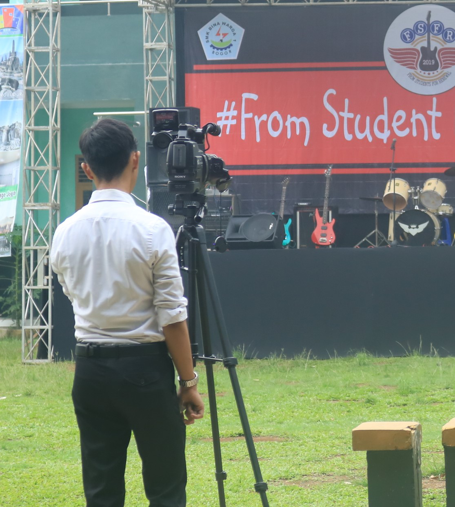

SOSIAL MEDIA



| SOFT SKILL |
|---|
| Team Work |
| Menejemen Waktu |
| kolaborasi |
| HARD SKILL |
|---|
| Microsoft Office |
| Photoshop |
| Photography |
| Instalasi Listrik |
| 2009 - 2014 | : | SDN Pasirlaja 03 |
|---|---|---|
| 2014 - 2017 | : | SMP Negri 2 Sukaraja |
| 2017 - 2020 | : | SMK Bina Warga 1 Kota Bogor |
| 2021 - Sekarang | : | STT Terpadu Nurul Fikri |
| 2015 - 2020 | : | PRAMUKA |
|---|---|---|
| 2017 - 2020 | : | OSIS |
| 2019 - 2020 | : | ROHIS |